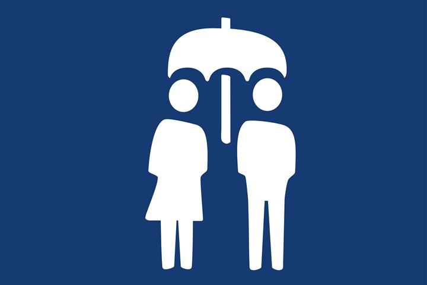

Sociale Zekerheid in 2040: een modern vangnet
Door: Hamza

Sociale zekerheid is een belangrijk onderdeel van de Nederlandse verzorgingsstaat. Het zorgt ervoor dat mensen ondersteuning krijgen bij werkloosheid, ziekte of arbeidsongeschiktheid. Door de vergrijzing neemt de druk op pensioenen en uitkeringen toe, waardoor het systeem zich moet aanpassen om duurzaam te blijven.
In 2040 wordt veel van het administratieve werk geautomatiseerd. Door automatisering en digitalisering kunnen uitkeringen sneller en eerlijker worden geregeld. Computers en slimme systemen controleren aanvragen, waardoor fouten worden verminderd en mensen sneller geholpen worden. Dit vermindert bureaucratie en zorgt voor meer duidelijkheid voor burgers.
Ook verandert de arbeidsmarkt door flexibilisering: steeds meer mensen werken flexibel of als zelfstandige. De sociale zekerheid moet zich hierop aanpassen, zodat ook deze groepen goed beschermd blijven. Marktwerking in de zorg- en verzekeringssector beïnvloedt bovendien de beschikbare middelen, waardoor slimme keuzes noodzakelijk zijn.
Globalisering speelt ook een rol: internationale trends en technologieën maken het mogelijk om efficiëntere systemen voor sociale zekerheid te gebruiken en best practices uit andere landen toe te passen. Robotisering kan daarnaast helpen bij herhalende administratieve taken, zodat menselijke medewerkers zich kunnen richten op complexe kwesties en persoonlijk contact met burgers.
Als deze veranderingen goed worden doorgevoerd, blijft sociale zekerheid in 2040 een sterk en modern vangnet. Zo blijft de verzorgingsstaat eerlijk, toegankelijk en toekomstbestendig voor iedereen, ook in een snel veranderende wereld.